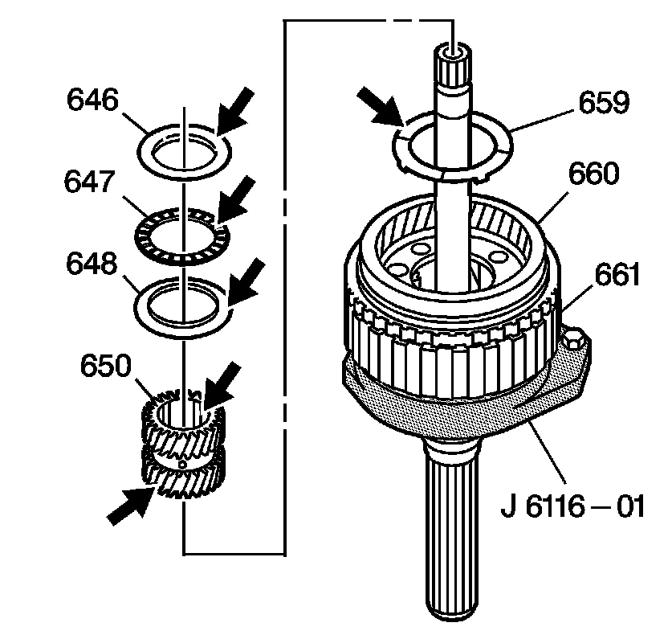

Center Support and Gear Unit Assembly Disassemble
Center Support and Gear Unit Assembly Disassemble
1. Remove the center support assembly (640) from the reaction carrier assembly (651).
2. Remove the reaction carrier thrust washer (642) (brass). The thrust washer may be stuck to the center support assembly.
3. Remove the sun gear shaft assembly (649).
4. Inspect the sun gear shaft assembly (649) for the following:
^ Nicked, scored or worn bushings
^ Damaged splines and teeth
^ Cracks
5. Remove the reaction carrier assembly (651) from the output carrier assembly (661).
6. Remove the low clutch roller assembly (644) from the reaction carrier assembly (651).
7. Inspect the reaction carrier assembly (651) for the following:
^ The pinion gear and pocket thrust surfaces for damage
^ Cracks or damage to band apply surface
^ Pinion gear damage
^ Pinion gear pin for proper location (walking)
^ The bushings for damage
8. Inspect the low clutch roller assembly (644) for damage to the rollers, springs and cage surfaces.

9. Remove the sun gear front thrust bearing assembly (647).
10. Remove the sun gear thrust bearing races (646, 648). One race (646) may be stuck to the center support assembly.
11. Remove the sun gear (650).
12. Remove the output carrier thrust washer (659) from the output carrier assembly (661).
13. Inspect the thrust washer, the bearing assembly and the bearing races for damage.
14. Inspect the sun gear teeth for damage.
15. Turn the output carrier assembly (661) over so that the output shaft assembly (671) faces up.
16. Remove the output shaft thrust washer (673).
17. Remove the output shaft retainer ring (672).
18. Remove the output shaft assembly (671).
19. Inspect the output shaft assembly (671) for the following:
^ Stripped splines
^ Damaged teeth
^ Cracks
^ Damage to the bushing
20. Remove the rear internal gear thrust bearing assembly (647) and the thrust bearing races (648, 669) from the rear internal gear (666). The thrust bearing may be stuck to the output shaft assembly (671).
21. Inspect the thrust bearing assembly and bearing races for damage.
22. Remove the rear internal gear (666) and the main shaft (662) from the output carrier assembly (661).
23. Remove the washer (691), the sun gear rear thrust bearing assembly (664) and bearing races (663, 665).
24. Inspect the bearing assembly, and the bearing races for damage.
25. Remove the main shaft retainer ring (670). Hold the main shaft (662) so it will not fall and become damaged.
26. Remove the main shaft (662) from the rear internal gear (666).
27. Inspect the main shaft (662) for damaged splines.
28. Inspect the main shaft (662) for wear.
29. Inspect the rear internal gear (666) for the following:
^ Stripped splines
^ Damaged teeth
^ Wear
30. Clean all components thoroughly.
31. Inspect the output carrier assembly (661) for the following:
^ Excessive wear
^ Damage to the parking pawl lugs
^ Damage to the pinion gears
^ Excessive wear to the pinion gear steel and brass washers
^ Damage to the pinion gear and pocket thrust surfaces.
32. Inspect the front internal gear for damage and cracks.
33. Inspect the vehicle speed sensor reluctor ring (660) for tightness and damage.